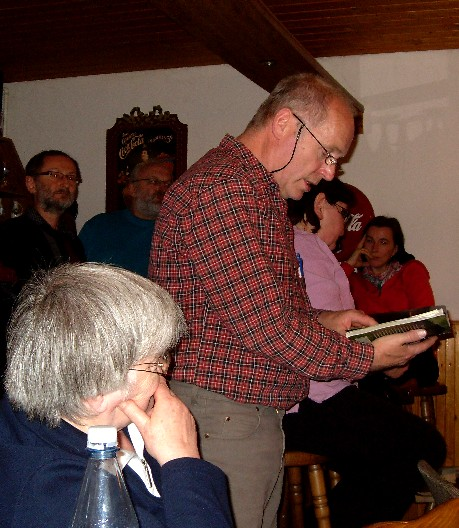
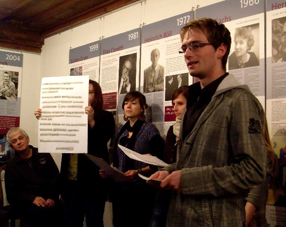
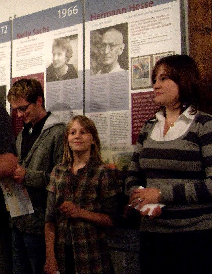
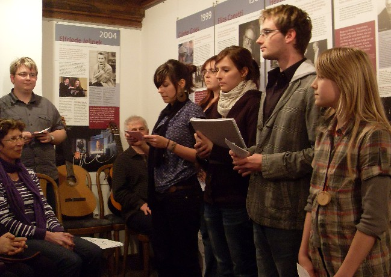
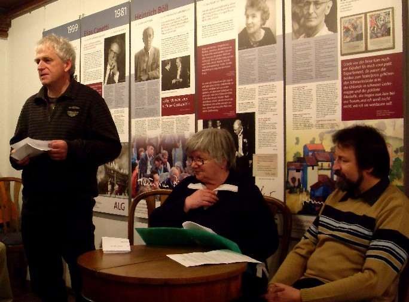
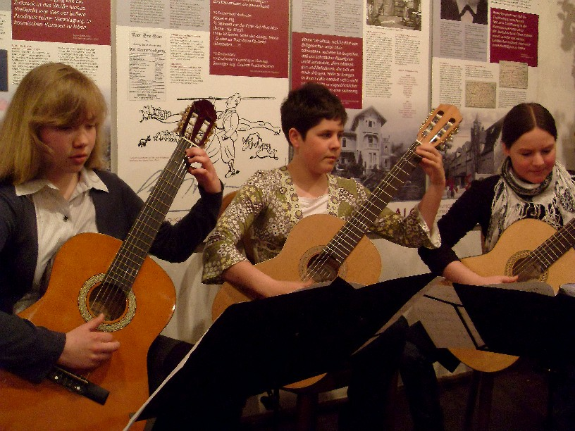
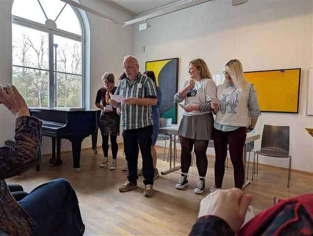

Die 21. Werkstatttage des Südthüringer Literaturvereins brachten 28 Autorinnen und Autoren der Region (inklusive Gästen aus Rheinland-Pfalz), darunter eine größere Gruppe jugendlicher Autoren zusammen. In drei Seminargruppen, geleitet von Sandra Eberwein (Prosa), Michael Carl (Lyrik) und Ulrike Blechschmidt / Manuela Ploch (Jugendgruppe), widmeten sich die Schriftsteller diesmal dem Thema „Das Eigene und das Fremde". Darüber hinaus wurden jüngst entstandene Texte diskutiert und wie schon in den Jahren zuvor Schreibaufgaben gestellt. Besonders die Jugendgruppe bot denn auch zur traditionellen Lesung am Samstagabend im Literaturmuseum Baumbachhaus in Meiningen ihre eigene Sicht auf das Thema mit Pointen und überraschenden Einblicken. Die Lesung wurde musikalisch umrahmt von jungen Musikern aus Meiningen.







